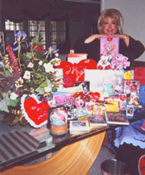

Cathy's Closet is actually the first I Love Lucy store in existence! Cathy started this business with only a handful of Lucy products -in 1992 - through her sheer love of I Love Lucy herself! From a handful of magnets, tee-shirts, and a couple of ties, it is hard to believe how things have grown to include all the wonderful Lucy products that we have now!
As you can see, Lucie Arnaz gave us a wonderful quote, "The only closet with more authentic Lucy items than Cathy's was my mother's!" It was so exciting and sweet to have her make such a nice statement about us! She said it was absolutely true, so it popped immediately into her head as the perfect thing to say about us. To be compared in the same sentence with Lucy is such a thrill and honor!
Since the creation of Cathy's Closet, Cathy was chosen as the store for Lucie Arnaz's CD rom, and has been interviewed by numerous newpapers and news shows, and radio stations. From the LA times, to a Dallas CBS news show, to Bloomington, Indiana and a Canadian newspaper and more, Cathy's Closet has been written about and Cathy has been interviewed as the founder of America's First, and Favorite, I Love Lucy Store - your one-stop Lucy shop.
We were recently mentioned in the 50th anniversary TV guide which featured Lucy, written about in the new "Official 50th Anniversary I Love Lucy Book", and seen on the CBS I Love Lucy television special when Dick Van Dyke introduced the 'Lucy collectibles' now available. In the TV Guide, our website address was written about as a place to buy all the wonderful Lucy products now available (on page 34), and in the Official book there is a picture of Cathy with the caption "Cathy's Closet, opened in 1992 by owner and manager Cathy Kelley, is the first full-service I Love Lucy store on the planet. Cathy, a loyal friend of the Arnaz family, now sells hundreds of licensed I Love Lucy items. You can find her at www.lucystore.com or by calling 888/Buy-Lucy." We are so excited for all these exciting events!!! (If you would like more information on the TV Guides, you can see our "Lucy News/Events".
We are so honored and happy to have such great, loyal customers! - It feels like one big happy family -- all through the mutual love of our four favorite friends!